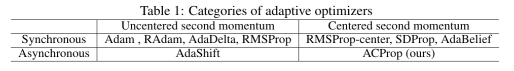

We propose ACProp (Asynchronous-centering-Prop), an adaptive optimizer which combines centering of second momentum and asynchronous update (e.g. for \(t\)-th update, denominator uses information up to step \(t-1\), while numerator uses gradient at \(t\)-th step).
ACProp has both strong theoretical properties and empirical performance.
With the example by Reddi et al. (2018), we show that asynchronous optimizers (e.g. AdaShift, ACProp) have weaker convergence condition than synchronous optimizers (e.g. Adam, RMSProp, AdaBelief); within asynchronous optimizers,
we show that centering of second momentum further weakens the convergence condition.
We demonstrate that ACProp has a convergence rate of \(O(\frac{1}{\sqrt{T}})\) for the stochastic non-convex case, which matches the oracle rate and outperforms the \(O(\frac{logT}{\sqrt{T}})\) rate of RMSProp and Adam.
We validate ACProp in extensive empirical studies: ACProp outperforms both SGD and other adaptive optimizers in image classification with CNN, and outperforms well-tuned adaptive optimizers in the training of various GAN models, reinforcement learning and transformers.
To sum up, ACProp has good theoretical properties including weak convergence condition and optimal convergence rate, and strong empirical performance including good generalization like SGD and training stability like Adam.
Algorithm
We first introduce the notion of ``sync (async)'' and ``center (uncenter)''. \textit{(a) Sync vs Async} The update on parameter \(x_t\) can be generally split into a numerator (e.g. \(m_t, g_t\)) and a denominator (e.g. \(\sqrt{s_t}, \sqrt{v_t}\)). We call it ``sync'' if the denominator depends on \(g_t\), such as in Adam and RMSProp; and call it ``async'' if the denominator is independent of \(g_t\), for example, denominator uses information up to step \(t-1\) for the \(t\)-th step. \textit{(b) Center vs Uncenter} The ``uncentered'' update uses \(v_t\), the exponential moving average (EMA) of \(g_t^2\); while the ``centered'' update uses \(s_t\), the EMA of \((g_t-m_t)^2\).

We broadly categorize adaptive optimizers according to different criteria. (a) Centered v.s. uncentered Most optimizers such as Adam and AdaDelta uses uncentered second momentum in the denominator; RMSProp-center , SDProp and AdaBelief use square root of centered second momentum in the denominator. AdaBelief is shown to achieve good generalization like the SGD family, fast convergence like the adaptive family, and training stability in complex settings such as GANs. (b) Sync vs async The synchronous optimizers typically use gradient \(g_t\) in both numerator and denominator, which leads to correlation between numerator and denominator; most existing optimizers belong to this category. The asynchronous optimizers decorrelate numerator and denominator (e.g. by using \(g_t\) as numerator and use \(\{g_0,...g_{t-1}\}\) in denominator for the \(t\)-th update),
Sync vs Async
Consider the following problem
\(f_t(x) =
\begin{cases}
Px,&\ \textit{if } t \% P = 1 \\
-x, &\ \textit{Otherwise} \\
\end{cases}
x \in [-1,1], P \in \mathbb{N}, P \geq 3\)
Sync optimizers (Adam, RMSProp) might diverge while async-optimizers always converge for any hyper-parameter \(\beta_1, \beta_2, P\)